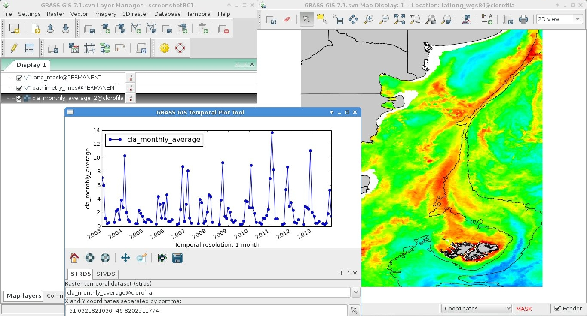
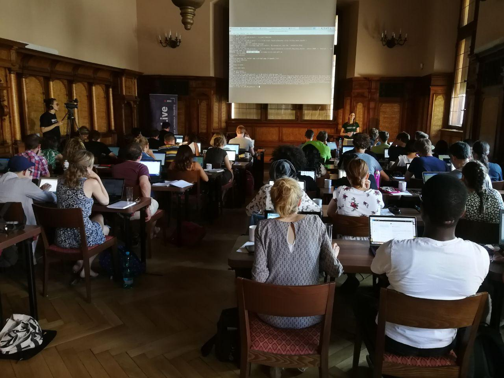

From zero to contributing an add-on for GRASS GIS
Eight years ago, while doing an MSc in Remote Sensing and GIS Applications at the Argentinean Space Agency - CONAE, I was looking for places where to do a 6-months internship in Italy. I wanted to go completely FOSS and I had heard about GRASS GIS, but hadn’t made the time to learn it until then. That was when I recalled a former colleague from university mentioning the keywords GRASS and Markus Neteler. Well, I wrote to him and ended up in Trento by January, 2013 (the pic is not from January of course!).
{kind=link}
From the beginning, I was determined to learn the command line way of GRASS-ing. Luckily, during the internship at the former PGIS in FEM, I got a lot of support and had the chance to participate in code sprints, conferences and meet several GRASS GIS core devs and power users. I really loved the software but I got hooked by the community behind it :hugs:

Once back in Argentina, the MSc thesis was a great excuse to learn and test the freshly developed temporal framework and some basic bash to write simple scripts. I always received a lot of support from devs and other users in the mailing list. Please take into account that my background is Biology and I had zero coding/programming before this… for me, each step was a huge step!

From everything I worked on for the MSc thesis, I compiled the Temporal Data Processing wiki page and some others that came later. That wiki has been accessed 127,853 times as of today 30/12/2020! Impressive, eh?
With time, I learnt to create diffs which I was sending to other devs so they would merge into the source code. It was mostly documentation, but hey, one must start somewhere, no? Eventually, I became so “bothersome” :innocent:, that they proposed me as core dev! :nerd_face: I was given permission to mess up the source code :scream: I didn’t, don’t worry! That same year I was nominated as OSGeo charter member. By then, I had already taught some GRASS GIS workshops and courses here and there and also organized a code sprint at my house!

While preparing material for those workshops and courses, I started learning git. This helped me to be (more or less!) ready when GRASS moved from svn to GitHub. Furthermore, after setting up my own website with Hugo and the Academic theme, I became pretty familiar with such a technology. This lead to a strong involvement in the new GRASS website that we launched by mid 2020 for GRASS birthday.
By November, I thought it was time to challenge myself with writing an add-on for my favorite software. I learnt a little bit of Python and found something that could be useful to have: a toolset to search, download and import Landsat data into GRASS GIS. The availability of similar modules helped a lot, I had examples to learn from. I received a lot of motivation and help from other devs in the process. Finally, some days ago, I decided the toolset was ready to be shared and I committed it to the official add-ons repo :scream: and there it is the i.landsat toolset containing 2 modules: i.landsat.download and i.landsat.import! And my name in a piece of code that everyone can use, review and modify :star_struck:
This experience has definitely reinforced my feeling of belonging to this great community. And, as if all that was not enough, a week ago I was nominated for the PSC (GRASS GIS Project Steering Committee)! What a nice ride so far! :sweat_smile:
If I could, I’m sure everyone can!! GRASS GIS will welcome you, come and join!
{kind=link}